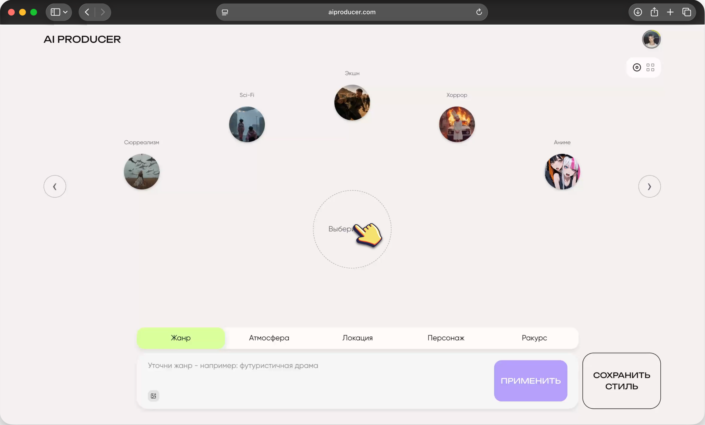
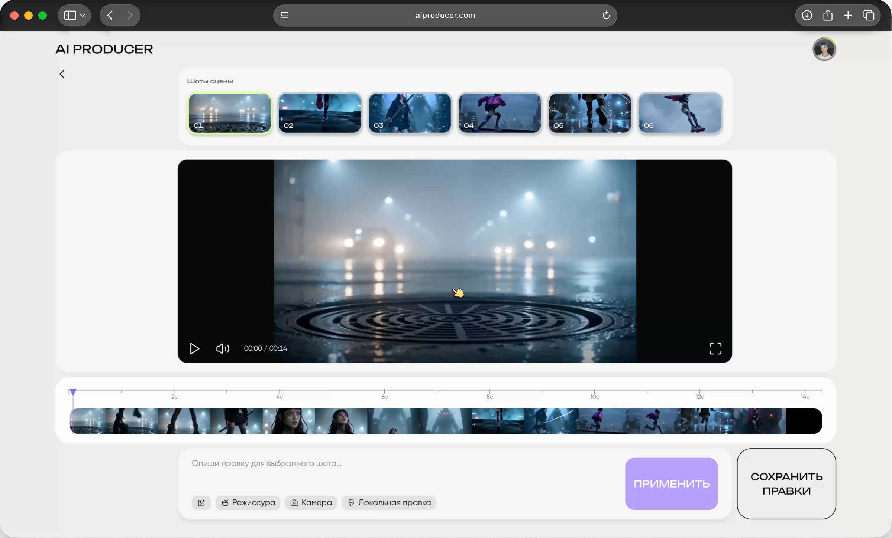
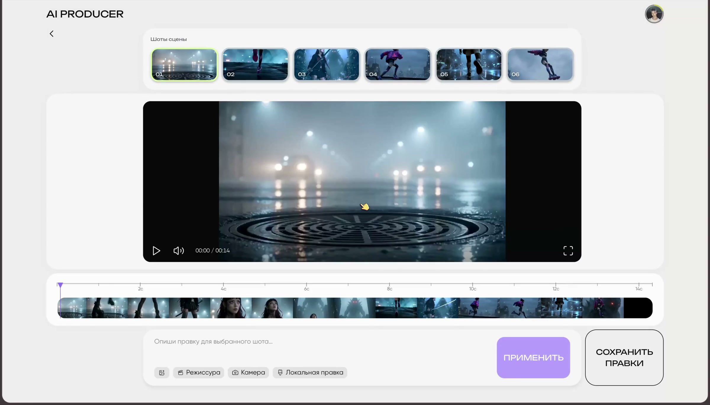

«Живу в зоопарке тулзов»
Сергей, композерAI PRODUCER
Веб-платформа
для создания
последовательных AI-сцен
с режиссёрским контролем
ТРАБЛ
AI генерирует кадр —
но не режиссирует сцену
ГЛУБИННЫЕ ИНТЕРВЬЮ
ПРОВЕРКА
7 Респондентов
Медиа-художники
Спецы из видеопродакшена
и спецы из видеопродакшена
ИНСАЙТЫ
«Консистентность плавает»
Кузьма, медиа-креатор«Правки слишком дорогие»
Вика, кинематографистПроблема
не в генерации,
а в управлении сценой
ВИЗУАЛЬНОЕ НАПРАВЛЕНИЕ
Задать стиль до генерации
От жанра и атмосферы до персонажа и ракурса — собрать направление сцены из визуальных референсов.

Настроить по отдельности
Жанр, атмосфера, локация, персонаж и ракурс разделены. Выбор референсов можно дополнить текстовым уточнением.
Задать соотношение
Проценты показывают заданные веса выбранных референсов: например, 35% тревоги, 40% холодного неона и 25% городского тумана.
РЕШЕНИЕ
От сцены к локальной правке
Выбрать шот, настроить камеру
или уточнить отдельную область кадра

Сцена / Сборка шотов / Локальная правка
Сцена остаётся рядом
Лента шотов сохраняет контекст сцены. Режиссура, камера и локальная правка собраны рядом с просмотром и таймлайном выбранного шота.
Указать, что изменить
Выделение области дополняет запрос «Измени татуировку на лице». Пользователь задаёт не только содержание правки, но и её место в кадре.
В кейсе показан интерактивный прототип. Точность влияния весов и сохранение остальных деталей при генерации требуют отдельной проверки на AI-модели.
UI KIT
Один язык управления
Цвет различает выбранный инструмент и действие.
Типографика — управление и содержание.

ПРОСТРАНСТВО#F3F0ED
ВЫБОР#D8FF9D
ДЕЙСТВИЕ#B59FFC
ТЕКСТ#0A0A0A
Unbounded
Названия, переключатели и основные действия.
Gilroy
Промпты, пояснения и служебная информация.
ТЕСТИРОВАНИЕ
Проверил, считывается ли сценарий
от сборки визуальной концепции
до локальной правки и экспорта
Проверил, как считывается сценарий: от визуальной концепции до локальной правки и экспорта
ПОСЛЕ ТЕСТИРОВАНИЯ
Сценарий работает.
Порог входа ещё нужно снизить.
Объяснить первый шаг
Добавить ориентиры для людей без опыта работы с AI-инструментами.
Сделать выбор явным
Усилить различие между доступным и выбранным инструментом.
Показать результат действия
Сделать переходы между шагами сценария понятнее.
Направления доработки по итогам исследования. Результаты повторного тестирования пока не представлены.